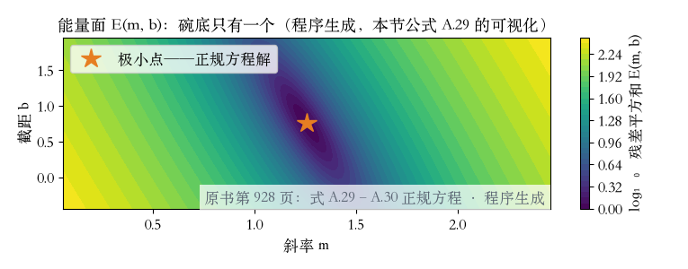
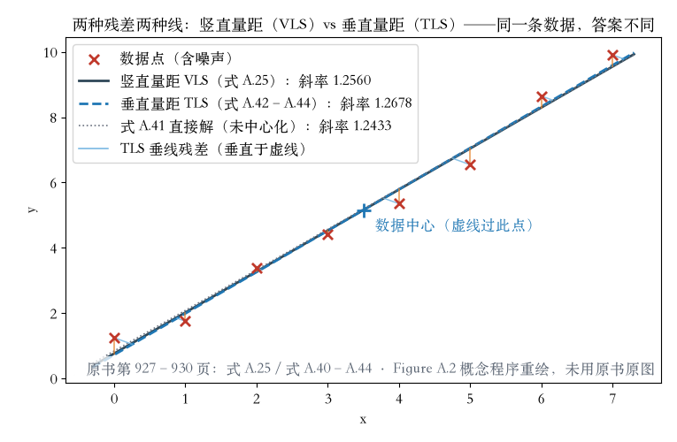

第 4 章 · 开章
从猜到证明：最小二乘
- 第 4 章处理数据不全的问题。
- 从最简单的模型开始：猜一条线。
- 写下误差，求导令零，推出答案。
- 这一集走完从猜到证明。
依据：原书第 193 页
附录 A · 最小二乘
残差与直线拟合
- 最小二乘在视觉里无处不在。
- 残差 = 测量位置 − 预测位置。
- 直线拟合：y = mx + b。
- 让竖直残差平方和最小。
依据：原书第 927 页
min Σ |yi − (m xi + b)|²
式 A.25；残差定义见式 A.23–A.24
附录 A · 正规方程
三步推出正规方程
- 对参数线性；A 叫设计矩阵，一行一个点。
- 一般形式：‖A x − b‖²。
- 展开后求梯度，令其为零。
- 得到 (AᵀA)x = Aᵀb。
依据：原书第 927–928 页

能量面 E(m,b) 的等高线碗｜程序生成，未用教材或论文原图
附录 A · 解法与新尺子
同一个模子，换一把尺子
- 实验三路同解：斜率 1.2560、截距 0.7606。
- 正弦拟合恢复振幅 2.5131，真值 2.5。
- 首选乔列斯基；QR 与病态见工具箱。
- 误差四面八方：解是最小特征向量。
依据：原书第 927–929 页
两个新对象
变量含误差模型
齐次平方误差
特征向量解
最后右奇异向量
附录 A · 全最小二乘实验
两种量距，两条线
- 竖直量距斜率 1.2560。
- 垂直量距中心化斜率 1.2678。
- 差 0.0118，放大看能分开。
- 统计最优要求噪声一样大；先减均值。
依据：原书第 929–930 页；本集实验

竖直残差（橙）与垂直残差（浅蓝）｜程序生成，未用教材或论文原图
收束 · 作业与下一集
闭环了，下一集见
- 作业一：手推两点直线拟合。
- 作业二：换二次多项式重跑。
- 这一集：残差→正规方程→三路验证。
- 下一集：鲁棒损失与迭代重加权。
依据：原书第 927–930、945 页
两句话
残差平方和是最小二乘的核心
量距方向决定最优的线
外点会拉坏平方损失